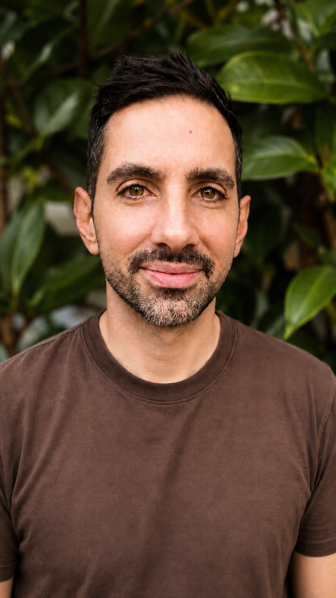

01
Disponible
Prácticas guiadas
Respiración, presencia, movimiento consciente y experiencias breves para volver al cuerpo y al momento que estás viviendo.
Probar un minutoRespiración, presencia y movimiento en prácticas simples para habitar lo que sucede con más equilibrio, sin salir de tu vida cotidiana.
01 — FILOSOFÍA
Encontrar el centro en un mundo que acelera.
Ritmo de Calma nace de una búsqueda personal: encontrar herramientas concretas para atravesar la sobrecarga, el cansancio y el exceso de estímulos con más presencia, sin tener que convertir la vida cotidiana en otra cosa.
La propuesta es simple: usar respiración, atención y movimiento como puertas para volver al cuerpo, recuperar equilibrio y habitar el presente. Sin perfección, sin promesas grandilocuentes. Con práctica.
No necesitás que el mundo se detenga para volver a vos.”
02 — EXPLORAR
Un espacio que va a crecer con experiencias claras y posibles para acompañarte en la vida cotidiana.
Respiración, presencia, movimiento consciente y experiencias breves para volver al cuerpo y al momento que estás viviendo.
Probar un minutoTextos sobre atención, conciencia, presencia, vida cotidiana y filosofía aplicada, escritos para acompañar sin dar respuestas cerradas.
TEXTOS · FILOSOFÍA APLICADAGuías, ejercicios y materiales reutilizables para sostener la práctica con autonomía y llevarla a distintos momentos de la semana.
GUÍAS · EJERCICIOS · MATERIALES
03 — SOBRE MÍ
Soy Gonzalo. Docente y profesor de yoga. Llegué a estas prácticas buscando herramientas que también pudieran sostenerme a mí en medio de la vida real.
Esa experiencia es la base de Ritmo de Calma: traducir ideas profundas a prácticas claras, breves y posibles. Mi intención no es decirte cómo deberías sentirte, sino acompañarte a reconocer cómo estás, volver al cuerpo y habitar el presente con más conciencia.
04 — UN MINUTO DE PRESENCIA
Probá una experiencia mínima y dejá que el círculo acompañe tu respiración. Respirar con naturalidad también es parte de la práctica.